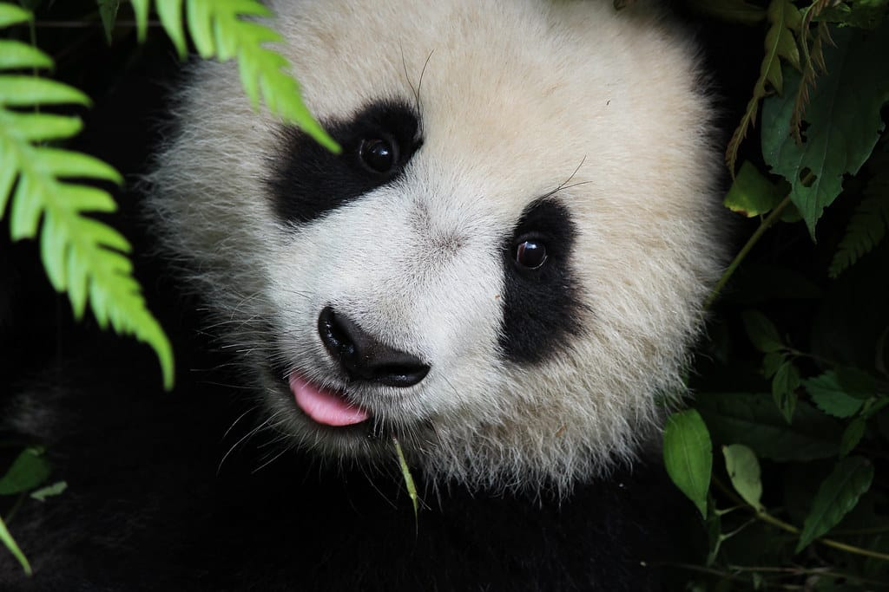

A Vida dos Ursos Pandas Revelada

Hoje, trazemos uma visão completa sobre os adoráveis ursos pandas, incluindo informações sobre sua espécie, habitat, alimentação e curiosidades fascinantes.
Pandas: Adoráveis Gigantes
Os Ursos Pandas (Ailuropoda melanoleuca) são conhecidos por sua aparência fofa e pelagem distintiva, com manchas pretas sobre um fundo branco. Eles são nativos da China e são frequentemente chamados de "ursos gigantes". Surpreendentemente, essas criaturas carismáticas são mais relacionadas aos ursos do que aos pandas vermelhos, que são parentes mais distantes.
Habitat: Montanhas e Florestas da China
Os Ursos Pandas são exclusivos da China e são encontrados principalmente nas províncias de Sichuan, Shaanxi e Gansu. Eles habitam as regiões montanhosas e florestas temperadas do sudoeste da China, onde podem ser encontrados em altitudes que variam de 1.200 a 3.000 metros acima do nível do mar. O habitat montanhoso e isolado é essencial para sua sobrevivência, pois oferece uma grande variedade de plantas de bambu, sua principal fonte de alimento.
Alimentação: O Desafio do Bambu
A dieta dos Ursos Pandas é quase exclusivamente baseada em bambu, embora eles também comam pequenas quantidades de frutas, vegetais e até pequenos animais ocasionalmente. No entanto, o bambu não é tão nutritivo quanto outros alimentos, o que significa que os pandas precisam comer grandes quantidades para atender às suas necessidades energéticas. Eles têm dentes e mandíbulas adaptados para triturar bambu fibroso, e podem consumir cerca de 26 a 84 libras (12 a 38 kg) de bambu por dia!
Uma curiosidade interessante é que, apesar de sua dieta quase exclusiva de bambu, os Ursos Pandas ainda têm características físicas de carnívoros, como o sistema digestivo e a estrutura dos dentes. Isso significa que eles não conseguem extrair completamente os nutrientes do bambu, o que os torna animais muito eficientes em termos de energia.
Curiosidades sobre Ursos Pandas: Além do Bambu e das Manchas Pretas
Bambu "Venenoso"
Embora o bambu seja a principal fonte de alimento dos Ursos Pandas, ele contém substâncias tóxicas que podem ser prejudiciais para muitos outros animais. No entanto, os pandas desenvolveram adaptações ao longo do tempo para tolerar essas toxinas e digerir o bambu com segurança.
Solitários por Natureza
Os Ursos Pandas são animais solitários por natureza e geralmente preferem viver sozinhos. Eles se encontram apenas na época de acasalamento.
Conservação
Essas criaturas adoráveis enfrentam ameaças significativas devido à degradação do habitat e à caça ilegal. A conservação dos Ursos Pandas é uma prioridade global, e muitos esforços estão sendo feitos para proteger essas espécies ameaçadas.
Esforços de Reprodução
A reprodução em cativeiro é uma parte crucial dos esforços de conservação. Os pandas são notoriamente difíceis de reproduzir em cativeiro, mas muitos zoológicos e centros de conservação têm tido sucesso na criação de filhotes de panda, contribuindo para a preservação da espécie.

Os Ursos Pandas são verdadeiramente tesouros da natureza, e seu carisma e importância na conservação da biodiversidade fazem deles uma espécie icônica no mundo da vida selvagem. Com esforços contínuos de conservação, esperamos que esses adoráveis gigantes continuem a prosperar em seu habitat nativo.